Let U andV be two unitary matrices. Consider the following statements: Statement 1: U + V is unitary. Statement 2: UV is unitary. Select the correct options from the following:
Only statement 2 is correct.
Both statement 1 and statement 2 are incorrect.
Both statement 1 and statement 2 are correct.
Only statement 1 is correct.
Q2MCQ3 marks
Consider a function f(x, y) = x2 + y2 − 4x − 2y + 5. Using gradient descent algorithm, with an initial guess of (3, 2) and learning rate of 0.1, what will be the value of (x, y) after one iteration?
x = 3.2, y = 2.2
x = 3, y = 2
x = 1.8,y = 0.8
x = 2.8, y = 1.8
Q3MCQ3 marks
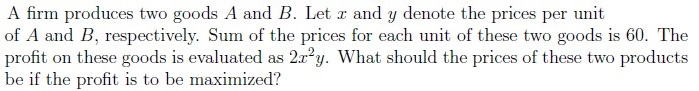
x = 40, y = 20
x = 20, y = 40
x = 30, y = 30
x = 0, y = 60
None of these
Q4MCQ4 marks
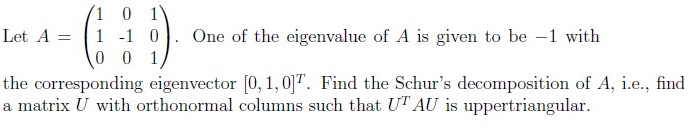
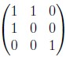
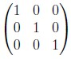
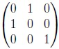
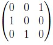
Q5MSQ3 marksselect all that apply
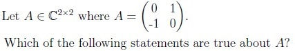
A is Hermitian matrix.
A is not Hermitian matrix.
A is unitarily diagonalizable.
A is not unitarily diagonalizable.
Comprehension passage - the questions below it refer to this
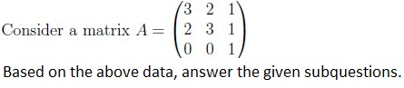
Q6SA3 marks
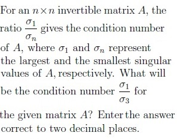
Q7MCQ2 marks
Is the matrix A positive definite?
Yes
No
Comprehension passage - the questions below it refer to this
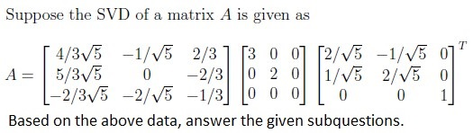
Q8SA2 marks
What is the rank of A?
Q9MSQ3 marksselect all that apply
Which of the following options are true?
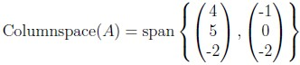
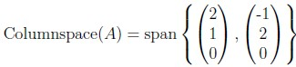
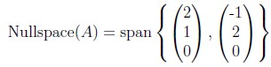
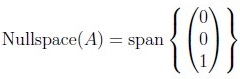
Q10MSQ2 marksselect all that apply
Which among the following statements are true about principal component analysis (PCA)?
PCA is a supervised learning algorithm.
Principal components are the eigenvectors of the sample covariance matrix.
Principal components are eigenvectors of the centered data matrix.
If p1 and p2 are the principal component vectors, then p1 is orthogonal to p2.
Comprehension passage - the questions below it refer to this
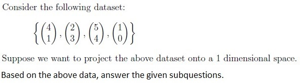
Q11MCQ3 marks
Compute the sample covariance matrix C for the given dataset.
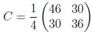
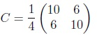
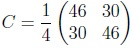
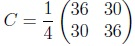
Q12MCQ3 marks
Which is the principal direction that is chosen for performing PCA?